Workshop Exercise 2 - Projects & Job Templates
Table Contents
- Objective
- Guide
- Setup Git Repository
- Create the Project
- Create a Job Template and Run a Job
- Challenge Lab: Check the Result
- What About Some Practice?
Objective
-
Red Hat Ansible Automation Platform is like a full kitchen. It has many tools and components that work together to help you automate tasks at an enterprise level.
-
One important part of this kitchen is the Ansible Automation Platform Controller. It helps you run your automation jobs in a secure and controlled way.
-
To run an automation job, the Controller uses a few key objects:
-
Projects: A collection of playbooks (automation scripts). These are usually stored in a version control system like Git.
-
Inventory: A list of systems (servers or nodes) where your automation will run.
-
Credentials: Secure information (like usernames, passwords, or SSH keys) used to connect to your systems.
-
Execution Environment Image: Think of this as a Lego box set 🧱. It contains all the tools, modules (Legos), and dependencies needed to run your automation (playbook).
-
Job Template: This is the blueprint that connects everything together (project, inventory, credentials, and execution environment) to run an automation job.
-
What You Will Do
In this exercise, you will:
- Create a new Project using an existing playbook repository
- Create a Job Template
- Run your first automation job using the Ansible Automation Platform Controller
By the end, you will understand how all these components work together—just like using the right tools in a full kitchen.
Guide
Setup Git Repository
For this demonstration, we will use playbooks stored in a Git repository:
https://github.com/ansible/workshop-examples
A playbook to install the Apache web server has already been committed to the directory rhel/apache, apache_install.yml:
1 2 3 4 5 6 7 8 9 10 11 12 13 14 15 16 17 18 19 20 21 22 23 24 25 26 27 28 29 30 31 32 33 | |
Note: Observe the difference from other playbooks you might have written! Most importantly, there is no
becomeandhostsis set toweb. When you set hosts toweb, the playbook automates all hosts in that group (node1, node2, and node3) in parallel. This enables consistent automation across a large scale of hosts.
To configure and use this repository as a Source Control Management (SCM) system in automation controller you have to create a Project that uses the repository
Create the Project
-
Ansible Automation Platform 2.4 : Go to Resources → Projects click the Add Project button. Fill in the form:
-
If you do not see the
Resourcesmenu on the side, your environment is likely running Ansible Automation Platform version 2.5 or later. In that case, go to Automation Execution → Projects , then click the Create Project button and fill in the form.
| Parameter | Value |
|---|---|
| Name | Workshop Project |
| Organization | Default |
| Execution Environment | Default execution environment |
| Source Control Type | Git |
Enter the URL into the Project configuration:
| Parameter | Value |
|---|---|
| Source Control URL | https://github.com/ansible/workshop-examples.git |
| Options | Optional: Select Clean, Delete, Update Revision on Launch to request a fresh copy of the repository and to update the repository when launching a job. |
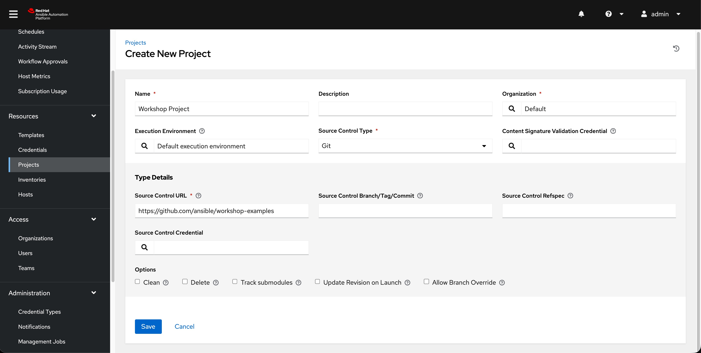
- Click Save or Create project
The new project will be synced automatically after creation. But you can also do this manually: Sync the Project again by selecting the 'Sync project' blue button.
After starting the sync job, go to the Jobs view, and you'll find the job doing the project update.
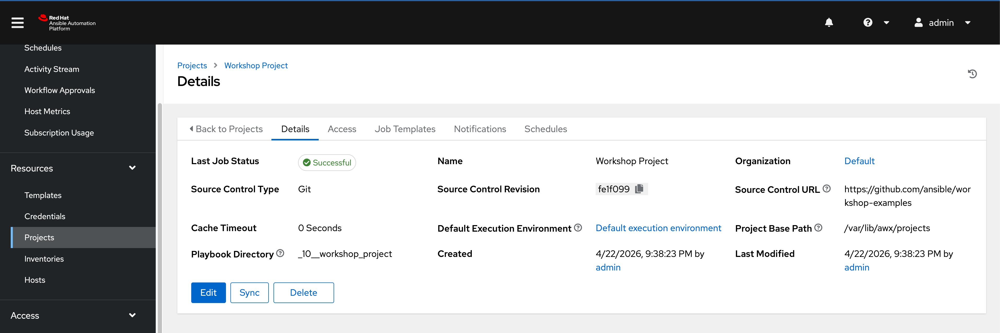
You should see "Successful" in the "Last Job Status" before you proceed.
Create a Job Template and Run a Job
A job template allows you to run an automation job. In order to run any type of automation, a job template must be created. A job template consists of knowning the following information:
-
Inventory: On what hosts should the job run?
-
Credentials What credentials are needed to log into the hosts?
-
Project: Where is the playbook?
-
Playbook: What playbook to use?
The Workshop Inventory and Workshop Credential have been pre-configured for this workshop. You can explore their details by navigating to Resources → Inventories for the inventory and Resources → Credentials for the credentials. Feel free to review them before proceeding.
- If you do not see the
Resourcesmenu on the side, your environment is likely running Ansible Automation Platform version 2.5 or later. In that case, go to Automation Execution → Infrastructure → Inventories → Workshop Inventory , for credentials Automation Execution → Infrastructure → Credentials → Workshop Credential
Workshop Inventory
Resources → Inventories → Workshop Inventory → Hosts (Tab)
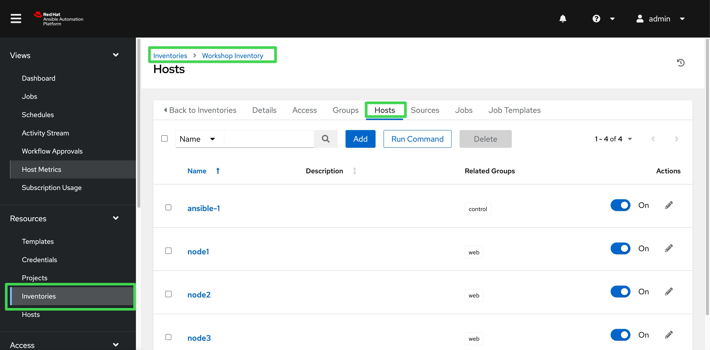
Resources → Inventories → Workshop Inventory → Groups (Tab) → web
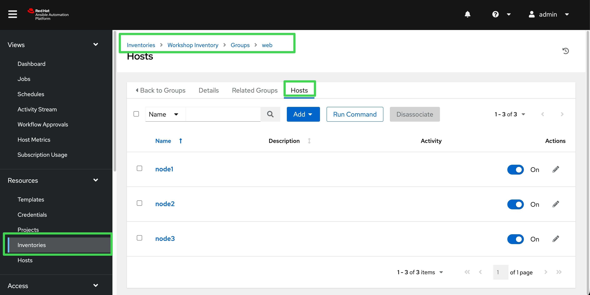
Workshop Credential Resources → Credentials → Workshop Credential
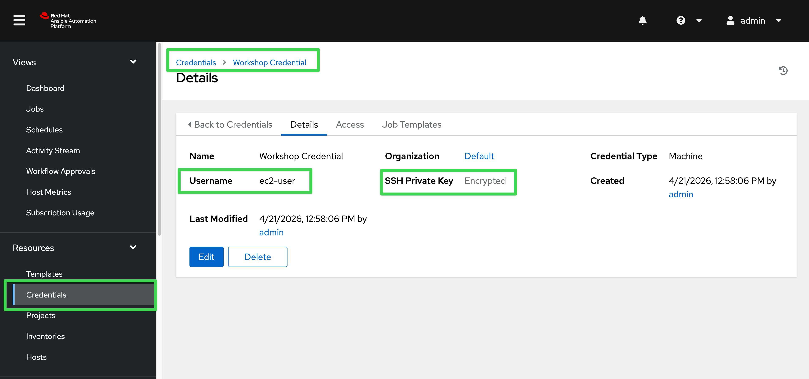
Note Credentials are securely stored in encrypted format. Even as an administrator, you cannot retrieve them in plain text.
Job Template
To create a Job Template, go to the Resources -> Templates view,click the Create template button and choose Create job template.
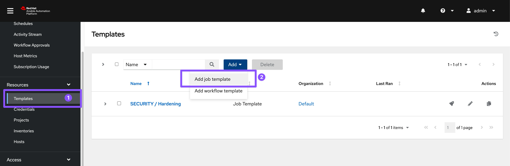
- If you do not see the
Resourcesmenu on the side, your environment is likely running Ansible Automation Platform version 2.5 or later. In that case, go to the Automation Execution -> Templates view,click the Create template button and choose Create job template.
Fill in the following form:
Tip
Remember that you can often click on the question mark with a circle to get more details about the field.
| Parameter | Value |
|---|---|
| Name | Install Apache |
| Job Type | Run |
| Inventory | Workshop Inventory |
| Project | Workshop Project |
| Playbook | rhel/apache/apache_install.yml |
| Execution Environment | Default execution environment |
| Credentials | Workshop Credential |
| Limit | web |
| Options | tasks need to run as root so check **Privilege Escalation** |
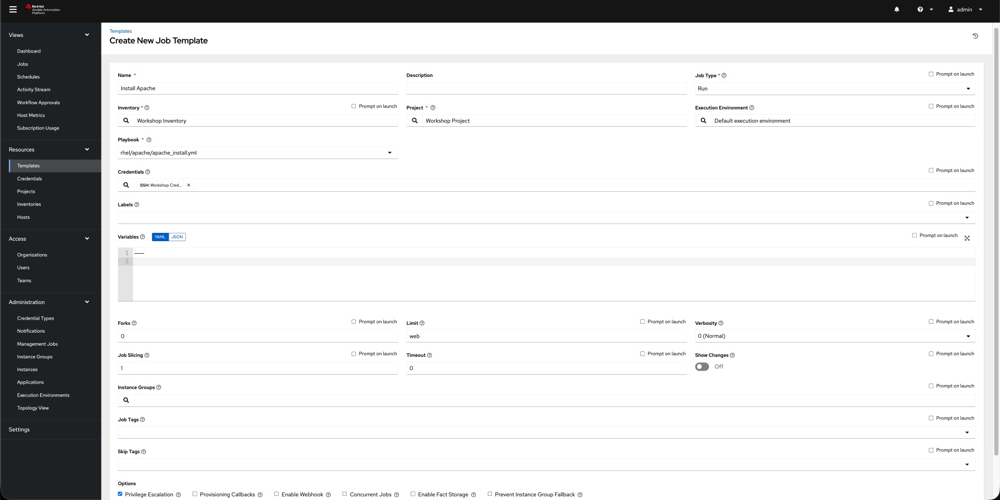
- Click Save or Create job template
You can start the job by directly clicking the blue Launch template button, or by clicking on the rocket in the Job Templates overview. After launching the Job Template, you are automatically brought to the job overview where you can follow the playbook execution in real time.
Template Details
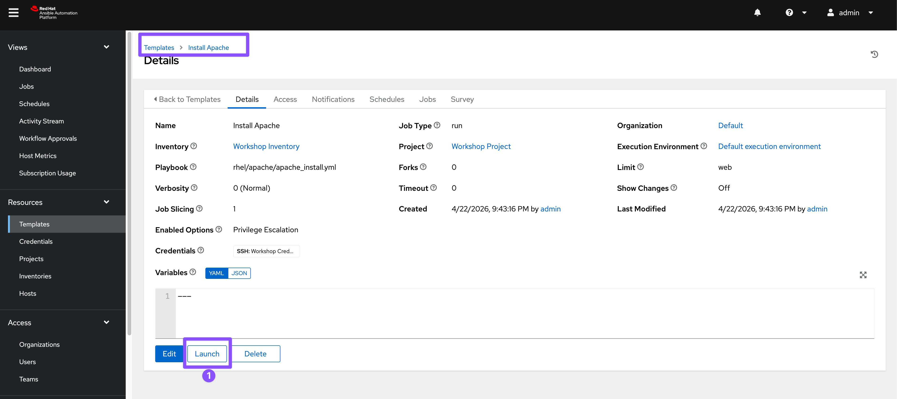
Job Run
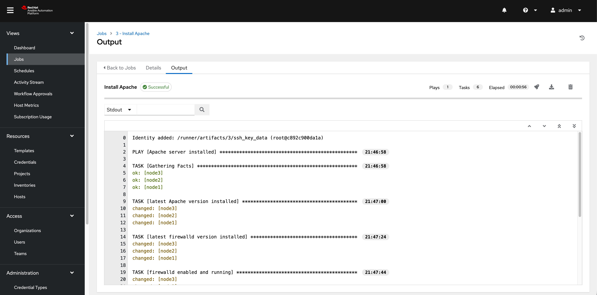
Since this might take some time, have a closer look at all the details provided:
-
All details of the job template like inventory, project, credentials and playbook are shown.
-
Additionally, the actual revision of the playbook is recorded here - this makes it easier to analyse job runs later on.
-
Also the time of execution with start and end time is recorded, giving you an idea of how long a job execution actually was.
-
Selecting Output shows the output of the running playbook. Click on a node underneath a task and see that detailed information are provided for each task of each node.
After the Job has finished go to the main Jobs view: All jobs are listed here, you should see directly before the Playbook run an Source Control Update was started. This is the Git update we configured for the Project on launch!
Challenge Lab: Check the Result
Time for a little challenge:
- Use an ad hoc command on both hosts to make sure Apache has been installed and is running.
You have already been through all the steps needed, so try this for yourself.
Tip What about
systemctl status httpd?Warning
Solution Below
- Go to
Resources → Inventories → Workshop Inventory -
If you do not see the
Resourcesmenu on the side, your environment is likely running Ansible Automation Platform version 2.5 or later. In that case, go to Automation Execution → Infrastructure → Inventories → Workshop Inventory -
Select the Hosts tab and select
node1,node2,node3and click Run Command
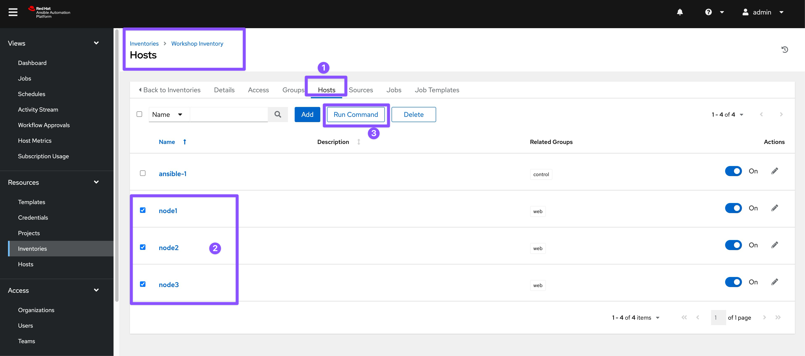
Within the Details window, select Module command, in Arguments type systemctl status httpd and click Next.
Within the Execution Environment window, select Default execution environment and click Next.
Within the Credential window, select Workshop Credentials and click Next.
Review your inputs and click Launch.
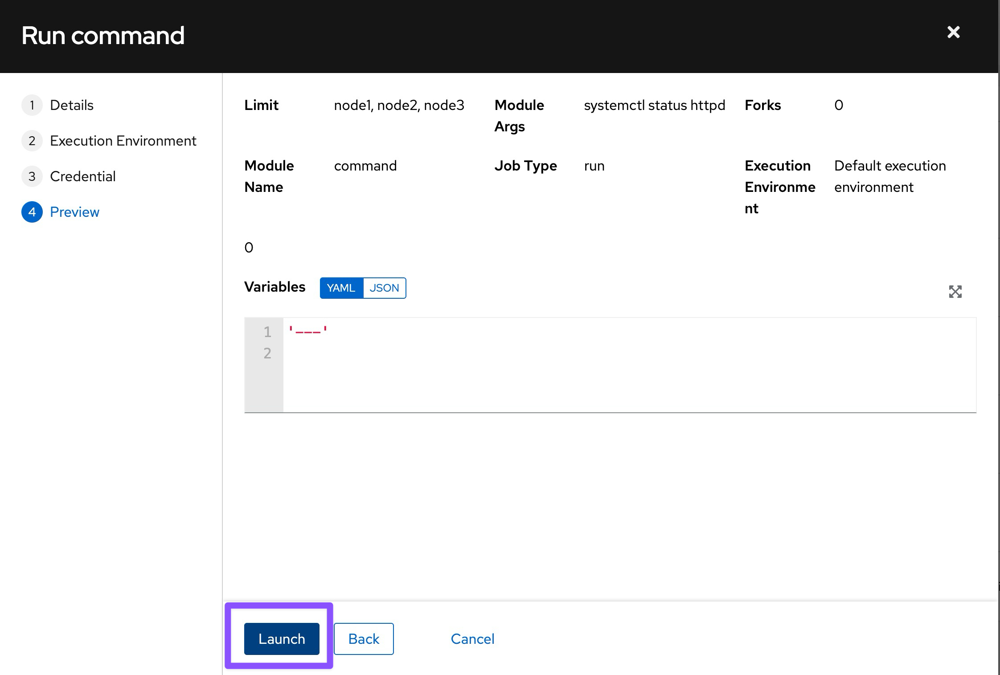
Verify that the output result is as expected.
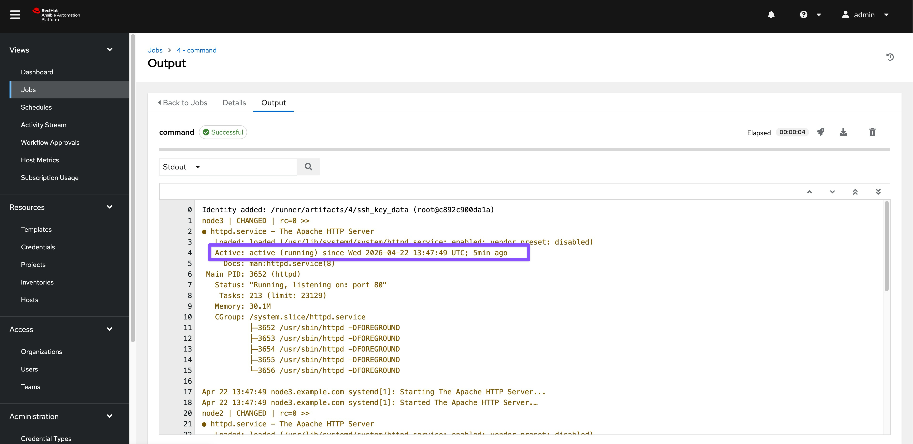
The output of the results is displayed once the command has completed.